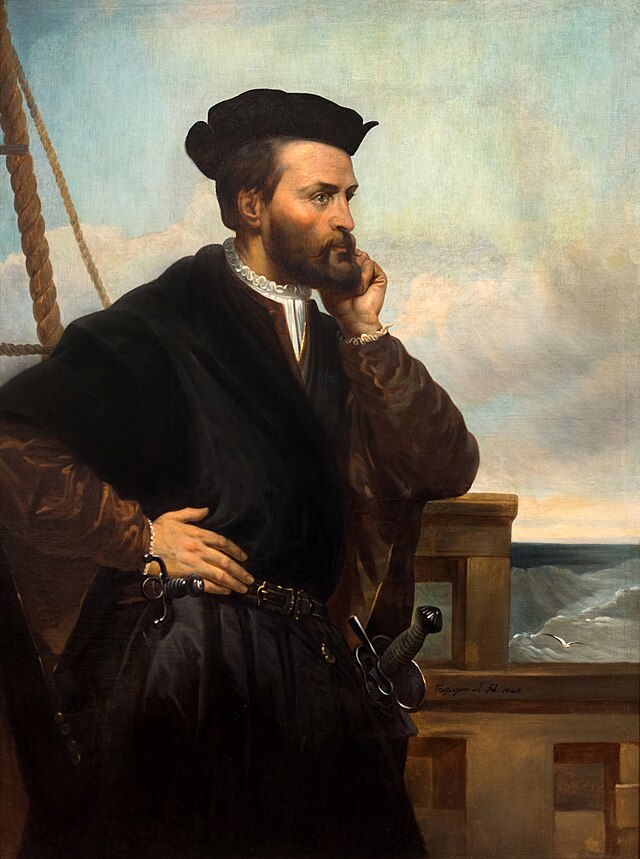

ז'אק קרטייה

לחץ על התמונה להגדלה
קרדיט ציור: Théophile Hamel | רישיון: CC BY-SA 4.0
מקור ומשמעות השם המלא (אטימולוגיה)
שם פרטי: ז'אק (Jacques)
השם "ז'אק" הוא הגרסה הצרפתית לשם המקראי העברי יעקב.
התפתחות השפה: השם התגלגל מהעברית ליוונית ולטינית (Iacomus / Iacobus), ומשם לצרפתית עתיקה. הפירוש המקורי, כפי שמופיע בתנ"ך, קשור למילה "עָקֵב" (יעקב אחז בעקבו של עשיו) או "יעקוב" (במשמעות של עוקב או תופס את המקום). זהו אחד השמות הנוצריים-קתוליים הנפוצים ביותר בצרפת של אותה תקופה, המקושר גם לשליח יעקב בן זבדי (סנטיאגו / ז'אק הקדוש).
שם משפחה: קרטייה (Cartier)
זהו שם משפחה צרפתי מסורתי המעיד על מקצוע או עיסוק.
פירוש ובלשנות: השם נגזר מהמילה בצרפתית עתיקה "Charette" או מהמילה הלטינית "Carrus", שמשמעותן עגלה או כרכרה להובלת סחורות. לפיכך, משמעות השם "קרטייה" היא עגלון או מוביל סחורות. שם זה מצביע על שורשים משפחתיים של אנשי מעמד פועלים או סוחרים אשר עסקו בלוגיסטיקה ושינוע (מעניין בהתחשב בכך שז'אק הפך ל"מוביל" ונווט ברמה הגלובלית).
ילדות והשנים המוקדמות בברטאן
ז'אק קרטייה נולד ביומו האחרון של שנת 1491 בעיר הנמל המבוצרת סן-מלו (Saint-Malo) שבחבל ברטאן, צפון-מערב צרפת. עיר זו נודעה כביתם של יורדי ים נועזים, פיראטים מורשים (קורסארים) וסוחרים חרוצים.
בניית מוניטין ימי: בניגוד לקונקיסטאדורים הספרדים שבאו מרקע יבשתי וצבאי, קרטייה גדל כשהוא נושם את אוויר האוקיינוס האטלנטי. כמעט ואין תיעוד רשמי לגבי ילדותו המוקדמת או השכלתו, אך ידוע כי הוא רכש במהירות מיומנויות ניווט מתקדמות. מעריכים כי עוד לפני מסעותיו הרשמיים מטעם הכתר, הוא כבר חצה את האוקיינוס האטלנטי, ככל הנראה כנווט בספינות דיג ששטו לאזור העשיר בדגה של ניופאונדלנד. בנוסף, חוקרים סבורים שהשתתף במסעות חקר אל חופי ברזיל, שכן ביומניו המאוחרים הוא נוהג להשוות מנהגים של ילידי קנדה למנהגי הילידים הברזילאים.
הדרך לחצר המלכות: מדוע בחר בו המלך?
כיצד יורד ים ממשפחה ממוצעת מסן-מלו הופך לנציג האישי של הכתר הצרפתי? התשובה טמונה בשילוב של פרוטקציה פוליטית נכונה ותסכול מלכותי עמוק.
פירוט המסעות: הניווט, החטיפה והכישלון בקולוניזציה
קרטייה הוביל שלוש משלחות רשמיות, שהפכו למסעות סוערים, רצופי תגליות, בגידות והישרדות בתנאים אכזריים.
הדרמה הגדולה התרחשה ב-24 ביולי בחצי האי גאספה (Gaspé): קרטייה הציב במקום צלב עץ אדיר באורך של כ-10 מטרים, שעליו מגן עם פרחי חבצלת (סמל המלוכה הצרפתית) והכיתוב "יחי מלך צרפת". הצ'יף המקומי, דונקונה (Donnacona), הבין מיד את המשמעות הפוליטית של הפעולה ויצא בסירתו למחות.
קרטייה הגיב בעורמה: הוא פיתה את דונקונה ובניו לעלות לספינתו, שבה חגג להם בסעודה, אך אז הודיע לצ'יף שהוא לוקח עמו את שני בניו, דומגאיה וטאיניואני, חזרה לצרפת כדי שישמשו כמתורגמנים במסע הבא.
לידת השם קנדה: בני הצ'יף כיוונו אותו אל תוך שפך הנהר הגדול. הם השתמשו במילה ההורונית-אירוקווית "Kanata" (שפירושה פשוט "כפר" או "יישוב") כדי לכוון את קרטייה לכפר האב שלהם, סטאדקונה (היכן שנמצאת כיום קוויבק סיטי). קרטייה, עקב חוסר הבנה, רשם ביומניו את השם "קנדה" כמתייחס לארץ כולה שמסביב לכפר. כך קיבלה המדינה את שמה.
חורף האימים: כשהצרפתים חזרו לסטאדקונה להעביר את החורף, הנהר קפא לעובי של כמעט שני מטרים, ושלג רב כיסה את האדמה. המחנה הצרפתי הוכה במחלת הצפדינה הנוראה (חוסר בוויטמין C), ו-25 מאנשיו של קרטייה מתו עד שהילידים הצילו אותם עם תרופה טבעית (פירוט בפרק התגליות מטה). באביב, קרטייה חטף את הצ'יף דונקונה עצמו לצרפת, צעד שהרס את יחסי האמון לעד.
עקב התקפות הילידים (בהן נהרגו 35 צרפתים), קרטייה נטש את המושבה. בדרכו חזרה נתקל בספינותיו של רוברוואל שפקד עליו לחזור לקוויבק. קרטייה המרה את פקודתו, ובאמצע הלילה הרים עוגן וברח לצרפת עם ה"אוצרות".
המפלה: בצרפת התברר גודל האסון. ה"זהב" התגלה כפיריט חסר ערך ("זהב שוטים") וה"יהלומים" כגבישי קוורץ פשוטים. משם נולד בצרפת ביטוי הלעג המפורסם: "Faux comme des diamants du Canada" (מזויף כמו יהלומים מקנדה).
מעבר לקנדה: תגליות גיאוגרפיות, הידרולוגיות ומדעיות
אמנם קרטייה לא מצא את המעבר לאסיה או את ערי הזהב, אך הרישומים הבוטניים, הגיאוגרפיים, ההידרולוגיים והאנתרופולוגיים שהביא עמו שינו את מפת העולם המוכר:
1. נהר ומפרץ סנט לורנס (St. Lawrence)
התגלית הגיאוגרפית העצומה ביותר של קרטייה הייתה מערכת המים שמחברת את הימות הגדולות לאוקיינוס האטלנטי.
אטימולוגיה (מקור השם): במסעו השני, קרטייה הגיע לשפך הנהר בתאריך 10 באוגוסט 1535. מכיוון שזהו יום חגו של הקדוש המעונה הנוצרי לורנטיוס מרומא (Saint-Laurent בצרפתית), קרטייה העניק למפרץ, ולאחר מכן לנהר כולו, את שמו של הקדוש.
הידרולוגיה ומאפיינים פיזיים: זהו איננו נהר רגיל, אלא אחד מעורקי המים העוצמתיים בעולם. הספיקה הממוצעת שלו אדירה ועומדת על כ-12,101 מטר מעוקב בשנייה.
מה שהופך את הנהר לייחודי וחשוב כל כך להיסטוריה של גילוי ארצות הוא העומק שלו: במרכז המפרץ והנהר זורמת התעלה הלורנטית (Laurentian Channel) שבה העומק מגיע עד לכ-350 מטרים מתחת לפני הים (וזאת במרחק של מאות קילומטרים לתוך היבשת). באזורים אחרים של הנהר העומק הממוצע נע בין 10 ל-30 מטרים. עומק הידרוגרפי חריג זה איפשר לספינות אוקייניות גדולות (כמו הגליאונים והקרוולות) לחדור עמוק מאוד לתוך יבשת צפון אמריקה, מה שהפך אותו ל"כביש המהיר" של האימפריה הצרפתית וסחר הפרוות.
2. אי הנסיך אדוארד (Prince Edward Island)
קרטייה היה האירופאי הראשון שחקר ותיעד את האי הקטן והיפהפה הזה הממוקם בתוך מפרץ סנט לורנס, במהלך מסעו הראשון ב-1534.
גיאוגרפיה: האי מתאפיין בנוף מישורי וגבעות מתונות, אך בעיקר בולט בזכות האדמה האדומה שלו (עשירה בתחמוצת ברזל), דיונות החול הלבנות, צוקי אבן חול אדומה וחופים מרהיבים. כאשר קרטייה דרך עליו, הוא התפעל עמוקות מפוריות האדמה ורשם ביומנו שזוהי "האדמה היפה ביותר שאפשר לראות, מלאה בעצים יפים ואחו".
אטימולוגיה (מקור השם): קרטייה העניק לאי את השם הצרפתי "איל סן-ז'אן" (Île Saint-Jean - אי יוחנן הקדוש). שם זה ליווה את האי במשך למעלה ממאתיים שנה תחת השלטון הצרפתי. רק בשנת 1799, לאחר שהאי עבר לשליטה מלאה של האימפריה הבריטית, הוחלט לשנות את שמו כדי לכבד את הנסיך אדוארד, דוכס קנט (שהיה בנו של מלך אנגליה ג'ורג' השלישי, ומאוחר יותר הפך לאביה של המלכה ויקטוריה המפורסמת).
3. בוטניקה ורפואה: תרופת הפלא לצפדינה
במהלך חורף 1535, כאשר הצוות גסס ממחלת הצפדינה, גילה קרטייה דרך בני האירוקוי את סגולותיו של עץ הארז הלבן המקומי (Thuja occidentalis), שהילידים כינו "Anneda". תה שרקחו מהמחטים והקליפה של העץ הכיל ריכוז אדיר של ויטמין C, והבריא את המלחים הגוססים תוך ימים ספורים. עץ זה יובא לצרפת והפך לאחד מעצי הנוי הראשונים שהגיעו מצפון אמריקה לאירופה.
4. זואולוגיה ואנתרופולוגיה
זואולוגיה: קרטייה תיעד לראשונה בצורה רשמית את לווייתני הבלוגה (הלווייתנים הלבנים) בשפך נהר הסנט לורנס, אותו כינה "נהר הסוסים" בגלל צורת ראשם המבצבצת מהמים. בנוסף תיעד מושבות ענק של ניבתנים (Walruses) וציפורי ים.
אנתרופולוגיה: קרטייה סיפק את התיעוד הכתוב הראשון והכמעט יחיד של העם הנקרא "האירוקוי של עמק סנט לורנס". הוא תיעד את ערי הענק שלהם והבתים הארוכים (Longhouses). באורח מצמרר, כאשר סמואל דה שמפלן חזר לאותו אזור 70 שנה מאוחר יותר, העם הזה נעלם לחלוטין (כנראה בשל מלחמות שבטיות או מגפות), ויומניו של קרטייה נותרו העדות הישירה היחידה לקיומם.
5. ההר המלכותי (מון רויאל - מונטריאול)
בסמוך לכפר האירוקוי העצום הוצ'לגה, קרטייה גילה הר מרשים. הוא העניק לו את השם מון רויאל (Mont Royal - ההר המלכותי) לכבוד מלך צרפת. עם השנים, השם התגלגל והשתבש לשם העיר השנייה בגודלה בקנדה כיום – מונטריאול (Montreal).
השפעה היסטורית ומורשת (Impact of Discovery)
קרטייה פרש לאחר המסע השלישי וחזר לחיות באחוזה שרכש סמוך לסן-מלו. הוא מת בשנת 1557 ממגיפה (כנראה טיפוס). על אף שמת באכזבה מאי מציאת אוצרות, מורשתו ההיסטורית עומדת איתנה:
מקורות וביבליוגרפיה (אימות מחקר)
- "יומני המסע של קרטייה" (Bref récit et succincte narration...): היומנים המקוריים של קרטייה, המפרטים את הריפוי מצפדינה על ידי עץ ה-Anneda ואת התצפיות הזואולוגיות על לווייתני הבלוגה.
- מחקר הידרולוגי וגיאוגרפי: נתונים הידרוגרפיים ממשלתיים של משרד הדיג והאוקיינוסים הקנדי (Fisheries and Oceans Canada) אודות התעלה הלורנטית ועומק נהר סנט לורנס (עד 350 מטרים).
- The Canadian Encyclopedia: ערכים אקדמיים ומקוונים המאמתים את השינוי האטימולוגי של אי הנסיך אדוארד (מ"איל סן-ז'אן" לשמו הבריטי ב-1799), ומקור השם של מפרץ סנט לורנס והר מון רויאל.
- מחקר היסטורי אקדמי: Trudel, Marcel (1973). The Beginnings of New France, 1524–1663. (לניתוח השפעות מסעותיו על התהוות קנדה הצרפתית).
- קרדיט תמונה ייצוגית: הדיוקן של ז'אק קרטייה נוצר על ידי הצייר Théophile Hamel (מבוסס על יצירה של François Nicholas Riss). התמונה נלקחה ממאגר Wikimedia Commons ומופצת תחת רישיון חופשי CC BY-SA 4.0.